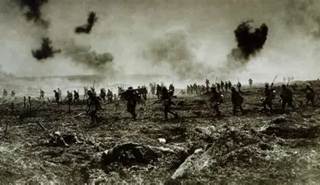
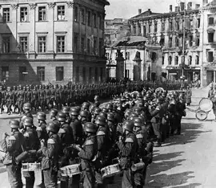
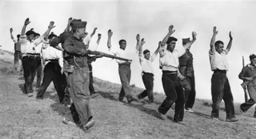
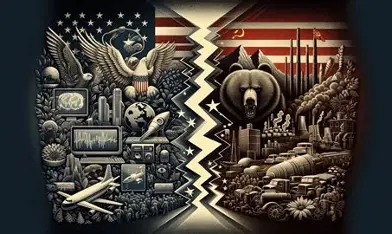

A Primeira Guerra Mundial aconteceu entre 1914 e 1918. Foi um conflito que envolveu diversas potências mundiais e provocou grandes mudanças políticas, econômicas e sociais.

A Segunda Guerra Mundial aconteceu entre 1939 e 1945. Foi um dos maiores conflitos da história, envolvendo países de diferentes continentes e causando consequências que marcaram o mundo.

A Guerra Civil é um conflito que acontece entre grupos de um mesmo país. Um exemplo importante foi a Guerra Civil Americana, que ocorreu entre 1861 e 1865.

A Guerra Fria foi um período de disputa política, econômica e ideológica entre dois blocos de países: os capitalistas, liderados pelos Estados Unidos, e os socialistas, liderados pela União Soviética. Essa disputa começou após a Segunda Guerra Mundial, em 1947, e terminou em 1991.